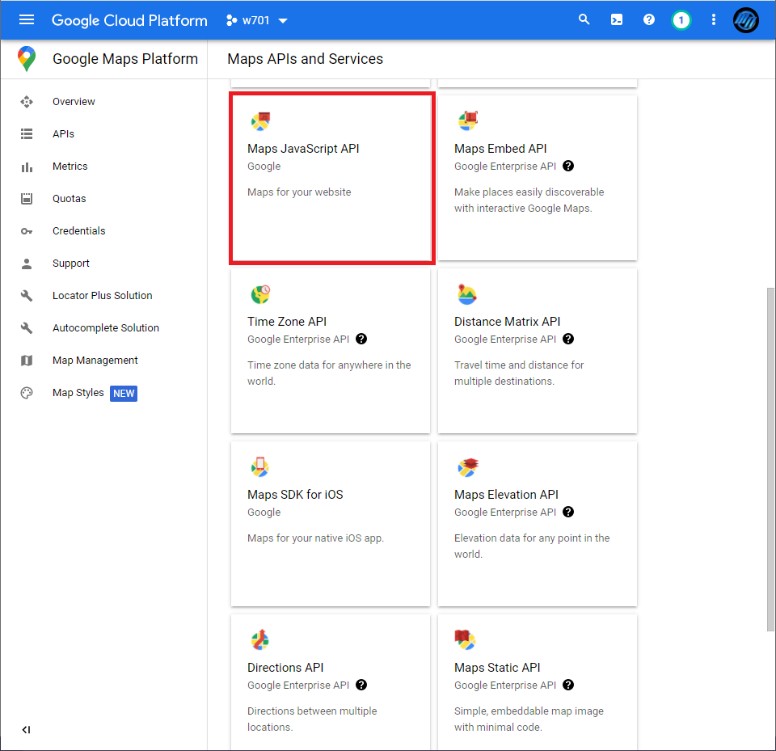
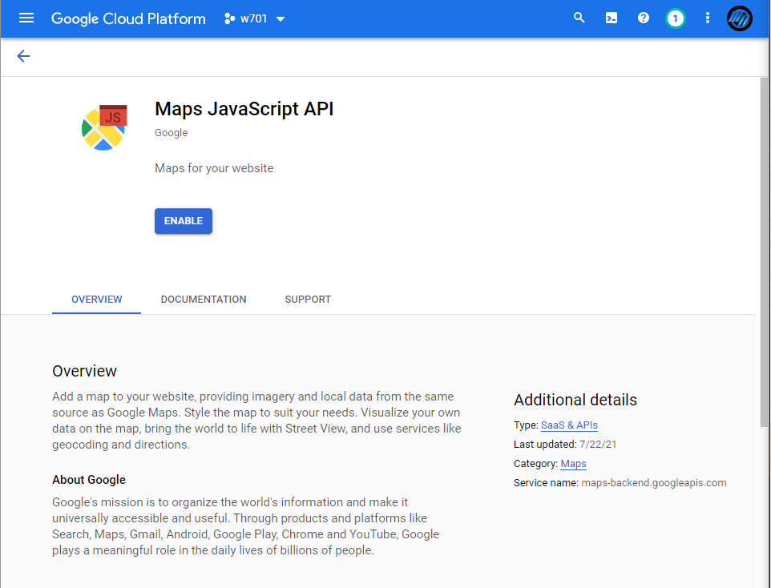
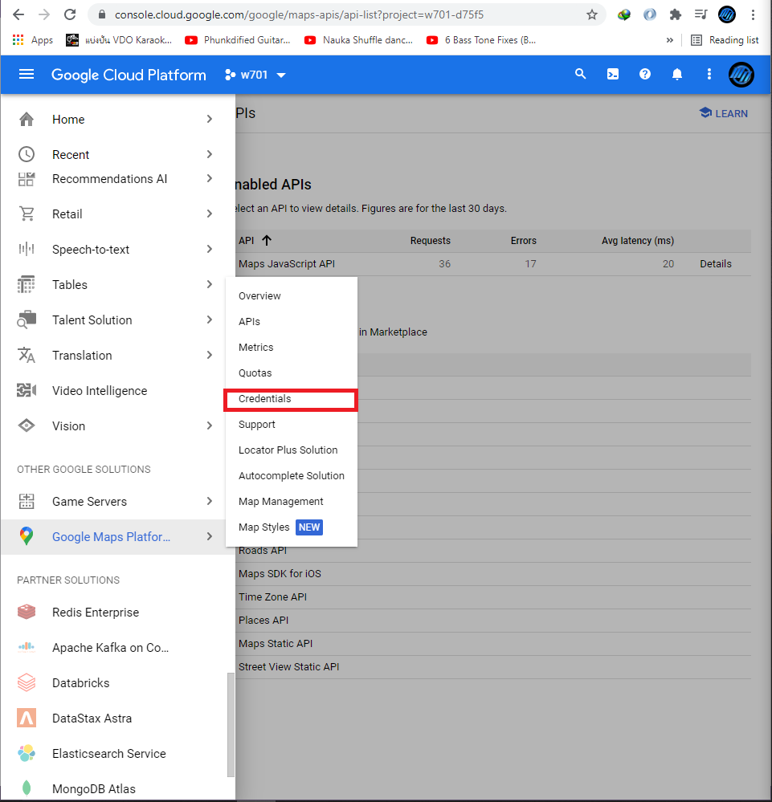

Google Map API
Google map API คือการเรียกใช้บริการ Google map ผ่าน Google map API โดยขั้นตอนแรกนั้นต้องไปที่ url https://console.cloud.google.com/ ก่อนถ้ายังไม่มี gmail ให้ทำการสมัครให้เรียบร้อยต่อมาเข้ามาที่หน้า home และทำการ new project ขึ้นมาหากยังไม่มี เมื่อสร้าง project เรียบร้อยจะปรากฏดังรูปด้านล่าง

เสร็จแล้วให้เลือก project พึ่งสร้าง เลือก open จากนั้นกดที่แถบ navigation menu เลื่อนลงมาจนกว่าจะเจอ Google Maps Platform แล้วเลือกที่ APIs ต่อมาให้เลือกที่ Maps JavaScript API เนื่องจากเราต้องการใช้เป็นแบบ JavaScript สำหรับ website

ต่อมาให้เลือก Enable และรอจนกว่าจะเสร็จ

เมื่อเสร็จแล้วให้เราเลือกที่ navigation > Google Maps Platform อีกครั้งแต่คราวนี้เลือกไปที่ Credentials เพื่อทำการ generate key สำหรับ google map

หลังจากนั้นให้เลือกที่ Credentials in APIs & Services เพื่อทำการเริ่มสร้าง key

เลือก CREATE CREDENTIALS > APIs Key จะได้รับ Key ตามรูปด้านล่าง

ต่อมาเราจะทำการทดสอบใช้ google map โดยให้แสดงในลักษณะการปักหมุดในแผนที่ โดยไปที่ url ด้านล่าง https://developers.google.com/maps/documentation/javascript/examples/map-latlng-literal เพื่อไปดู example code และทำการ copy แถบที่เป็น JavaScript และ HTML ทำการแก้ไข lat, lng ที่ต้องการ เปลี่ยนให้เป็นภาษาไทยและทำการวาง API เราพึ่งสร้างเข้าไปใน code

รูปด้านบนคือ code ตัวอย่าง HTML ที่ต้อง copy ไปวางที่ project ที่เราต้องการ

ด้รูปด้านบนคือ code ตัวอย่าง HTML ที่ต้อง copy ไปวางที่ project ที่เราต้องการ

ด้านบนคือผลลัพธิ์ที่เราทำการทดสอบ ซึ่งได้ปรากฏสถานที่ที่เราปักหมุดไว้ถูกต้อง